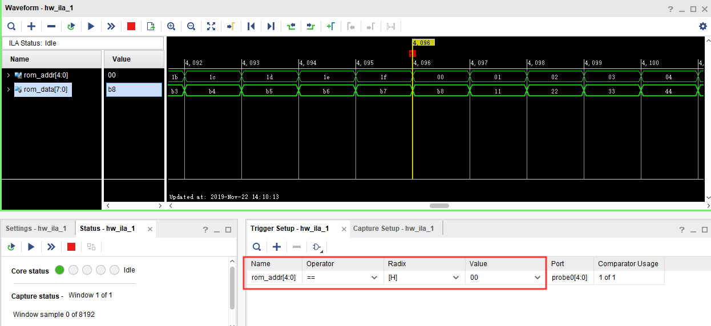

《第七章》FPGA 片内 ROM 测试实验¶
实验Vivado工程为“rom_test”。
FPGA本身是SRAM架构的,断电之后,程序就消失,那么如何利用FPGA实现一个ROM呢,我们可以利用FPGA内部的RAM资源实现ROM,但不是真正意义上的ROM,而是每次上电都会把初始化的值先写入RAM。本实验将为大家介绍如何使用FPGA内部的ROM以及程序对该ROM的数据读操作。
7.1实验原理¶
Xilinx在VIVADO里为我们已经提供了ROM的IP核, 我们只需通过IP核例化一个ROM,根据ROM的读时序来读取ROM中存储的数据。实验中会通过VIVADO集成的在线逻辑分析仪ila,我们可以观察ROM的读时序和从ROM中读取的数据。
7.2程序设计¶
7.2.1创建ROM初始化文件¶
既然是ROM,那么我们就必须提前给它准备好数据,然后在FPGA实际运行时,我们直接读取这些ROM中预存储好的数据就行。Xilinx FPGA的片内ROM支持初始化数据配置。如下图所示,我们可以创建一个名为rom_init.coe的文件,注意后缀一定是“.coe”,前面的名称当然可以随意起。

ROM初始化文件的内容格式很简单, 如下图所示。第一行为定义数据格式, 16代表ROM的数据格式为16进制。从第3行开始到第34行,是这个32*8bit大小ROM的初始化数据。每行数字后面用逗号,最后一行数字结束用分号。

rom_init.coe编写完成后保存一下, 接下去我们开始设计和配置ROM IP核。
7.2.2添加ROM IP核¶
在添加ROM IP之前先新建一个rom_test的工程, 然后在工程中添加ROM IP,方法如下: 1) 点击下图中IP Catalog,在右侧弹出的界面中搜索rom,找到Block Memory Generator,双击打开。
将Component Name改为rom_ip,在Basic栏目下,将Memory Type改为Single Prot ROM。

切换到Port A Options栏目下,将ROM位宽Port A Width改为8,将ROM深度Port A Depth改为32,使能管脚Enable Port Type改为Always,并取消Primitives Output Register

Options栏目下,勾选Load Init File,点击Browse,选中之前制作好的.coe文件。

点击ok,点击Generate生成ip核。

7.3ROM测试程序编写¶
ROM的程序设计非常简单, 在程序中我们只要每个时钟改变ROM的地址, ROM就会输出当前地址的内部存储数据,例化ila,用于观察地址和数据的变化。ROM IP的实例化及程序设计如下:
`timescale 1ns / 1ps
module rom_test(
input sys_clk_p, //system clock 200Mhz postive pin
input sys_clk_n, //system clock 200Mhz negetive pin
input rst_n //复位,低电平有效
);
wire [7:0] rom_data; //ROM读出数据
reg [4:0] rom_addr; //ROM输入地址
wire sys_clk ;
IBUFDS IBUFDS_inst (
.O(sys_clk), // Buffer output
.I(sys_clk_p), // Diff_p buffer input (connect directly to top-level port)
.IB(sys_clk_n) // Diff_n buffer input (connect directly to top-level port)
);
//产生ROM地址读取数据
always @ (posedge sys_clk or negedge rst_n)
begin
if(!rst_n)
rom_addr <= 10'd0;
else
rom_addr <= rom_addr+1'b1;
end
//实例化ROM
rom_ip rom_ip_inst
(
.clka (sys_clk ), //inoput clka
.addra (rom_addr ), //input [4:0] addra
.douta (rom_data ) //output [7:0] douta
);
//实例化逻辑分析仪
ila_0 ila_m0
(
.clk (sys_clk),
.probe0 (rom_addr),
.probe1 (rom_data)
);
endmodule
绑定引脚
##################Compress Bitstream############################
set_property BITSTREAM.GENERAL.COMPRESS TRUE [current_design]
set_property PACKAGE_PIN AE5 [get_ports sys_clk_p]
set_property IOSTANDARD DIFF_SSTL12 [get_ports sys_clk_p]
create_clock -period 5.000 -name sys_clk_p -waveform {0.000 2.500} [get_ports sys_clk_p]
set_property PACKAGE_PIN AF12 [get_ports rst_n]
set_property IOSTANDARD LVCMOS33 [get_ports rst_n]
7.4仿真¶
仿真结果如下,符合预期,与RAM的读取数据一样,数据也是滞后于地址一个周期。

7.5板上验证¶
以地址0为触发条件,可以看到读取的数据与仿真一致。

ZYNQ MPSoC开发平台 FPGA教程 - Alinx官方网站